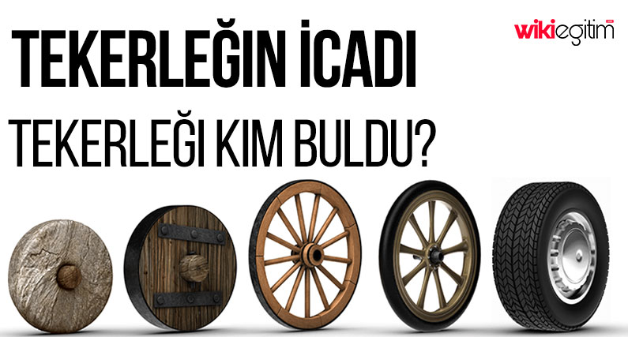

Tekerlek tıpkı ateş gibi dünya icat tarihinin en önemli buluşlarından bir tanesidir. İnsanların yaşayış biçmini değiştiren icatlar arasında en üst sıralarda sayılabilecek tekerlek, modern teknik ve mekaniğin merkezi durumundadır. Tekerleğin icadı o kadar eski zamanlara dayanmaktadır ki ne zaman ve kimler tarafından icat edildiği net olarak bilinememektedir. Bu nedenle tekerleğin icadı ile ilgili verilere ve tarihçesine bir göz atmakta fayda vardır. Bilinen en eski tekerlek kalıntıları M.Ö 3000 – 2500 yıllarına aittir. Amerikalı arkeolog Speiser tarafından Gawra’da yapılan kazılarda tekerleğe rastlanmıştır. Yine bir İngiliz arkeolog olan Woolley, Ur’da, M.Ö. 2.950 yıllarından kalma bir mezardan, tekerlek kalıntıları çıkarmıştır.